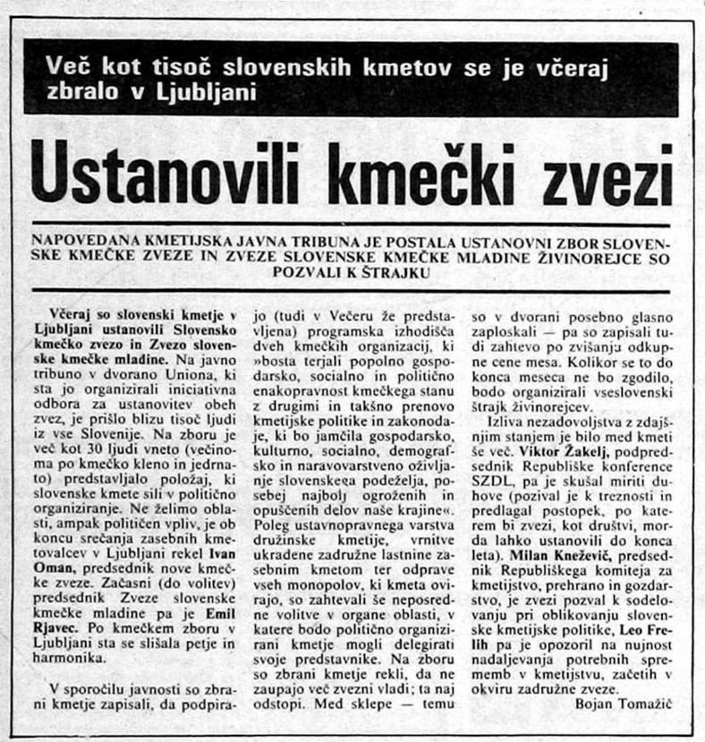

2
PROCESI
DEMOKRATIZACIJE
DEMOKRATIZACIJE

NOVE
POLITIČNE
STRANKE
POLITIČNE
STRANKE
Politične, gospodarske in socialne razmere v jugoslovanski federaciji so se konec osemdesetih hitro slabšale, partijski vrh pa je še vedno vztrajal pri tem, da oblasti ne bo delil z nikomer. V Sloveniji se je iz civilnodružbenih gibanj pospešeno razvijala politična opozicija, ki je zahtevala ukinitev oblastnega monopola zveze komunistov in uvedbo demokracije. Leta 1989 so nastale najpomembnejše slovenske opozicijske stranke. Kljub različnim programom in usmeritvam so si bile njihove temeljne zahteve podobne – zavzemale so se za večjo samostojnost Slovenije in razvoj politične demokracije. Večina novonastalih gibanj in strank je bila do razmer v državi kritična in je zagovarjala spremembe na gospodarskem, zdravstvenem, šolskem, socialnem, vojaškem in zunanjepolitičnem področju, pa tudi tesnejše povezovanje slovenskega in jugoslovanskega prostora z Evropo in svetom.
Nastanek najpomembnejših opozicijskih strank.
V prvih mesecih svojega obstoja so se novonastale zveze in gibanja srečevale z različnimi težavami, ki so ovirale njihov obstoj in razvoj. Politično prizorišče je bilo namreč po desetletjih prepovedanega političnega združevanja in enostrankarskega sistema zelo zaprto in okorno. Pripadniki novih strank so bili velikokrat deležni poskusov zastraševanja in so se srečevali s finančnimi težavami. Tudi v medijih, glasnikih vladajoče politike, so naleteli na izrazito odklonilen sprejem.

Množično ustanavljanje novih strank.
ODMEVI V
ČASOPISJU
ČASOPISJU


SLOVENSKA KMEČKA ZVEZA
Slovenska kmečka zveza z Ivanom Omanom na čelu je nastala 12. maja 1988 in je bila prva politična organizacija v času obnavljanja političnega pluralizma. Zastopala je stanovske interese kmetov, se zavzemala za razvoj kmetij, prenovo zadružništva, pravično davčno politiko, vrnitev krivično odvzete lastnine, skladen regionalni razvoj Slovenije ter tržno gospodarstvo po načelih ekoloških in socialnih smernic. Konec leta 1990 se je zveza preimenovala v Slovensko kmečko zvezo – Ljudsko stranko, po osamosvojitvi pa v Slovensko ljudsko stranko.
Slovenska kmečka zveza z Ivanom Omanom na čelu je nastala 12. maja 1988 in je bila prva politična organizacija v času obnavljanja političnega pluralizma. Zastopala je stanovske interese kmetov, se zavzemala za razvoj kmetij, prenovo zadružništva, pravično davčno politiko, vrnitev krivično odvzete lastnine, skladen regionalni razvoj Slovenije ter tržno gospodarstvo po načelih ekoloških in socialnih smernic. Konec leta 1990 se je zveza preimenovala v Slovensko kmečko zvezo – Ljudsko stranko, po osamosvojitvi pa v Slovensko ljudsko stranko.


Ivan Oman na zborovanju v Dornberku 11. novembra 1989
SLOVENSKA DEMOKRATIČNA ZVEZA
Slovenska demokratična zveza (SDZ) je bila ustanovljena 11. januarja 1989 in je bila prva prava opozicijska politična stranka. V njenem programu so bile zbrane vse zahteve takratne opozicije, med drugim parlamentarna in strankarska demokracija, tržno gospodarstvo in varstvo okolja. Prvi predsednik stranke je postal Dimitrij Rupel.
Slovenska demokratična zveza (SDZ) je bila ustanovljena 11. januarja 1989 in je bila prva prava opozicijska politična stranka. V njenem programu so bile zbrane vse zahteve takratne opozicije, med drugim parlamentarna in strankarska demokracija, tržno gospodarstvo in varstvo okolja. Prvi predsednik stranke je postal Dimitrij Rupel.
SOCIALDEMOKRATSKA ZVEZA SLOVENIJE
Ideja za ustanovitev Socialdemokratske zveze Slovenije se je porodila že med stavko delavcev Litostroja, decembra 1987. Pobudnikom stavke so se kmalu pridružili tudi ostali somišljeniki in se organizirali v stranko Socialdemokratska zveza Slovenije (SDZS), na čelu katere je bil France Tomšič. Stranka si je prizadevala za suvereno državo, večstrankarski parlamentarni sistem, učinkovit gospodarski sistem ter zaščito in varovanje okolja. Leta 1989 je vodenje stranke prevzel Jože Pučnik, leto kasneje pa se je zveza preimenovala v Socialdemokratsko stranko Slovenije.
Ideja za ustanovitev Socialdemokratske zveze Slovenije se je porodila že med stavko delavcev Litostroja, decembra 1987. Pobudnikom stavke so se kmalu pridružili tudi ostali somišljeniki in se organizirali v stranko Socialdemokratska zveza Slovenije (SDZS), na čelu katere je bil France Tomšič. Stranka si je prizadevala za suvereno državo, večstrankarski parlamentarni sistem, učinkovit gospodarski sistem ter zaščito in varovanje okolja. Leta 1989 je vodenje stranke prevzel Jože Pučnik, leto kasneje pa se je zveza preimenovala v Socialdemokratsko stranko Slovenije.


Jože Pučnik na zborovanju v Dornberku 11. novembra 1989
NASTANEK SLOVENSKEGA KRŠČANSKO-SOCIALNEGA GIBANJA
Pobudo za ustanovitev slovenskega krščansko-socialnega gibanja je podalo uredništvo Revije 2000, urednik Peter Kovačič pa je postal prvi predsednik. V začetku novembra 1989 se je gibanje preimenovalo v Slovenske krščanske demokrate (SKD), položaj predsednika pa je prevzel Lojze Peterle. Med drugim je stranka zahtevala pravico do javnega spomina na vse mrtve, rehabilitacijo po krivici obsojenih in odpravo vseh ideoloških ovir v družbi.
Pobudo za ustanovitev slovenskega krščansko-socialnega gibanja je podalo uredništvo Revije 2000, urednik Peter Kovačič pa je postal prvi predsednik. V začetku novembra 1989 se je gibanje preimenovalo v Slovenske krščanske demokrate (SKD), položaj predsednika pa je prevzel Lojze Peterle. Med drugim je stranka zahtevala pravico do javnega spomina na vse mrtve, rehabilitacijo po krivici obsojenih in odpravo vseh ideoloških ovir v družbi.


Razlog spreminjajočih se političnih razmer v drugi polovici osemdesetih let so bile tudi spremembe v vodstvih obeh vodilnih slovenskih družbenopolitičnih organizacij. V Zvezi komunistov Slovenije (ZKS) je v nasprotju z ustaljeno prakso začelo prihajati do nesoglasij med starejšimi in mlajšimi politiki. Slednji so vse bolj kritizirali obstoječe razmere in izražali neodobravanje s politiko stranke, kar je pripeljalo do krize in osipa članstva.

Franco Juri, »Slovenska delegacija zapusti 14. izredni kongres ZKJ«
Prelomen dogodek v ZKS je bil 14. izredni kongres Zveze komunistov Jugoslavije (ZKJ), 22. januarja 1990 v Beogradu. Slovenski delegati so na njem predlagali demokratične reforme za celotno Jugoslavijo ter reformo federacije in ZKJ, a so bili vsi predlogi zavrnjeni. Zaradi neupoštevanja njenih stališč in zavračanja zahtev je slovenska delegacija protestno zapustila kongres, ki je bil, kot se je pozneje izkazalo, zadnji – Zveza komunistov Jugoslavije je razpadla, Zveza komunistov Slovenije pa se je preoblikovala in preimenovala v Stranko demokratične prenove.
ODMEVI V
ČASOPISJU
ČASOPISJU


Vodstvo Socialistične zveze delovnega ljudstva je leta 1986 prevzel Jože Smole, ki je zavzel strpnejšo držo do verujočih. Izboljševanje pogojev za vernike je potekalo v soglasju med Socialistično zvezo delovnega ljudstva Slovenije (SZDLS) in slovensko Rimskokatoliško cerkvijo, ki jo je vodil nadškof Alojzij Šuštar. Slednji je lahko leta 1986 prvič po letu 1952, ko je bil božič odpravljen kot dela prost dan, vernikom voščil po radiu. V naslednjih letih so se začele odpirati tudi druge teme v povezavi s Cerkvijo – o božiču kot dela prostem dnevu, možnostih dostopa vernikov do medijev, verski oskrbi zapornikov in bolnikov … Socialistična zveza delovnega ljudstva se je v začetku januarja 1990 preimenovala v Socialistično zvezo Slovenije, nato pa v Socialistično stranko Slovenije.
Tudi Zveza socialistične mladine Slovenije je v kontekstu političnih sprememb razvila številne politične pobude in vse bolj kritizirala obstoječi sistem. Podprla je različne alternativne skupine in gibanja ter sodelovala tudi z nastajajočo opozicijo. Skladno s tem je jeseni 1989 predstavila nov pomen svojih kratic – Za svobodo mislečega sveta. V novem programu se je zavzemala za parlamentarno demokracijo, tržno gospodarstvo in ekološko ozaveščenost. Leto kasneje je spremenila ime v Liberalno demokratsko stranko (LDS).


Ustanovljena prva ekološka stranka pri nas.
Spremembe jugoslovanske ustave iz leta 1974, ki so odpravile temeljna načela federativne ureditve, so v Sloveniji spodbudile nastanek in organiziranje ustavne opozicije. Februarja 1989 je sedem slovenskih društev in organizacij ustanovilo Zbor za ustavo, ki je v naslednjih mesecih pripravil vrsto predlogov za spremembo slovenske ustave. Le-ta naj bi zagotovila politični pluralizem, ekonomsko suverenost in pravico do samoodločbe.
Zbor je s svojimi predlogi glede ustavnih sprememb močno vplival na delo ustavne komisije. Oblikovanje dopolnil k slovenski ustavi je mesece burilo duhove v slovenski javnosti ter sprožalo odločna nasprotovanja najvišjih jugoslovanskih državnih in partijskih oblasti. Enainosemdeset amandmajev, ki so bili sprejeti 27. septembra 1989, je temeljno spremenilo republiško ustavo in pomenilo velik korak v smeri večstrankarske parlamentarne demokracije.
Zbor je s svojimi predlogi glede ustavnih sprememb močno vplival na delo ustavne komisije. Oblikovanje dopolnil k slovenski ustavi je mesece burilo duhove v slovenski javnosti ter sprožalo odločna nasprotovanja najvišjih jugoslovanskih državnih in partijskih oblasti. Enainosemdeset amandmajev, ki so bili sprejeti 27. septembra 1989, je temeljno spremenilo republiško ustavo in pomenilo velik korak v smeri večstrankarske parlamentarne demokracije.


Ustavni amandmaji
Z dopolnili je bila uveljavljena pravica slovenskega naroda do samoodločbe in pravica, da lahko izredne razmere v Sloveniji razglasi le slovenska skupščina. Amandmaji so določali tudi, da v družbenopolitičnem življenju enakopravno sodelujejo vse organizacije delovnih ljudi in občanov, ki delujejo v skladu z ustavo, s čimer je bila odprta možnost za delovanje političnih strank. Nadalje je bil za uresničevanje suverenih pravic Slovenije uveden referendum, kot državna himna pa je bila določena Zdravljica. Drugi ustavni amandmaji so omogočali prehod iz socialističnega v tržno gospodarstvo ter zmanjšali nekatere pristojnosti federacije v Sloveniji, odpravljena pa je bila tudi smrtna kazen.

Zakon o himni


Zakon o volitvah v skupščine
Skupščina socialistične republike Slovenije je 27. decembra 1989 sprejela Zakon o volitvah v skupščine in Zakon o političnem združevanju.


Zakon o političnem združevanju

Politika izgublja podporo ljudstva.
DEMOS
Voditelji novonastalih političnih strank so bili mnenja, da se morajo opozicijske sile združiti in skupaj nastopiti na pomladnih volitvah leta 1990, saj lahko le tako premagajo dotedanjo oblast. Iz tega prepričanja je nastal Demos, demokratična opozicija Slovenije. Pogajanja o ustanovitvi skupne predvolilne koalicije so se začela sredi oktobra 1989, na njih pa so sodelovali predstavniki Slovenske kmečke zveze, Slovenske socialdemokratske zveze in Slovenske demokratične zveze.
Sporazum o ustanovitvi koalicije Demos so 27. novembra 1989 podpisali dr. Jože Pučnik, dr. Hubert Požarnik, Ivan Oman in Lojze Peterle. V Demosu so sodelovale Slovenska demokratična zveza, Socialdemokratska zveza Slovenije in Slovenski krščanski demokrati, njegov program pa je podpirala tudi Slovenska kmečka zveza. Slednja je k Demosu pristopila v začetku leta 1990, ko so h koaliciji pristopili tudi Zeleni Slovenije, kmalu zatem pa sta sledili še Slovenska obrtniška stranka in Sivi panterji. V vodstvu Demosa sta bila po dva predstavnika vsake izmed članic, predsednik koalicije je postal dr. Jože Pučnik, podpredsednika pa dr. Dimitrij Rupel in Lojze Peterle.
Demosov program je bil predstavljen januarja 1990 v Cankarjevem domu. Sestavljalo ga je osem točk, ki so se dotikale področja državne ureditve, gospodarstva, kmetijstva, varstva okolja, zdravstva, šolstva in kulture, socialne politike in obrambe. Temeljne zahteve je Demos gradil na osnovi Prispevkov za slovenski nacionalni program in Majniške deklaracije, najpomembnejši pa sta bili vzpostavitev civilne družbe, pravne države in pluralne demokracije ter nacionalna, politična in gospodarska samostojnost slovenskega naroda.
Demos se je zavzemal za miren prehod iz totalitarizma v demokratično urejeno družbo in narodno spravo. Želel je samostojno Slovenijo kot pravno državo, ki bi upoštevala človekove pravice in svoboščine ter spoštovala mednarodne obveznosti. Na gospodarskem področju se je Demos zavzemal za svobodno podjetništvo, tržne zakonitosti, večje ugodnosti za zasebno kmetijstvo in ekološko predelavo hrane. Poleg tega je koalicija želela tudi kakovostno zdravstvo in šolstvo, spodbujanje kulturne ustvarjalnosti, ohranjanje socialnih pravic in vzpostavitev slovenske vojske.

Hočemo Demos, hočemo DEM
DEM oziroma nemška marka je bila nekakšna vzporedna valuta v Jugoslaviji v času hiperinflacije, ko je vrednost dinarja drastično padala.
DEM oziroma nemška marka je bila nekakšna vzporedna valuta v Jugoslaviji v času hiperinflacije, ko je vrednost dinarja drastično padala.
Takoj po ustanovitvi se je Demos začel aktivno pripravljati na prve demokratične parlamentarne volitve po 2. svetovni vojni.
DEMOS
Voditelji novonastalih političnih strank so bili mnenja, da se morajo opozicijske sile združiti in skupaj nastopiti na pomladnih volitvah leta 1990, saj lahko le tako premagajo dotedanjo oblast. Iz tega prepričanja je nastal Demos, demokratična opozicija Slovenije. Pogajanja o ustanovitvi skupne predvolilne koalicije so se začela sredi oktobra 1989, na njih pa so sodelovali predstavniki Slovenske kmečke zveze, Slovenske socialdemokratske zveze in Slovenske demokratične zveze.
RAZGLASITEV
SAMOSTOJNOSTI
SAMOSTOJNOSTI